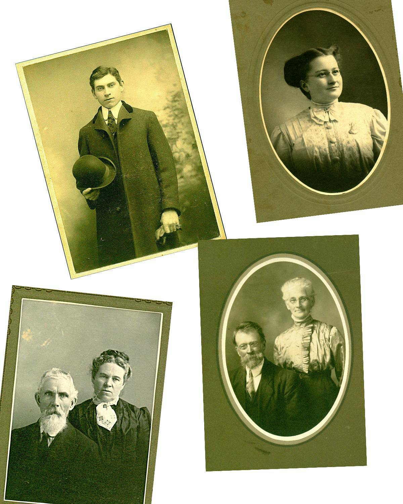

Glendenning Roots
____________________________________________________________________________
DONALD GLENDENNING
Glendenning Roots
___________________________________________
Donald E. M. Glendenning C.M.
Charlottetown, P.E.I.
Canada
2007
Glendenning Family Memories
Top left: Elmer Alton Glendenning
Top right: Jane Elizabeth Jardine Watling
Bottom left: Walter and Elizabeth (Peters) Glendenning
Bottom Right: Jubal and Grace (MacDonald) Watling
From the Collection of Jane Elizabeth Jardine (Watling) Glendenning
Elmer Alton Glendenning (1875 – 1938)
and
Jane Elizabeth Jardine (Watling) Glendenning (1890 – 1964)
My father and mother came from large and close families; visits and visitors were frequent and family ties were strong, even if remote. At an early age, I became intrigued by the number of neighbours along the length of the Black River to whom I was related. By the late 1940’s I began gathering family information.
Information was drawn from many sources with the Glendenning Family Bible in my Mother’s possession as my point of entry. Shortly thereafter, I conducted a survey on my father’s side of the family and I was hooked, although my information gathering was sporadic, at best. The benefit of computer based technology and a new spurt of information gathering after retirement resulted in a cabinet full of files, scraps of paper on every flat surface in my basement and a database containing over 4,000 names. The conclusion reached as a youngster in Black River has been borne out; at that time I was related to most people in the community.
My focus has been broad rather than narrow. By that, I mean, I am interested in the broad picture of who I am rather than pursuing only my Glendenning roots. As a result, I have since learned that, in addition to my Glendenning ancestry, I am also a descendant of folks named Peters, Sealey, Harley, Bidders, Rae, MacDonald, Watling, MacAskill, MacNaughton, Leach and Jardine. And if I were to reach back further, I would find other ancestors as well.
This document does not pretend to be a history of the family; instead, it is a record of what I learned during my search; a history would be more thorough and complete. If a lead interested me, I followed it. As a result the amount of information on each individual or family varies greatly.
I believe the included information to be accurate but I am sure that there are mistakes; if I knew what the mistakes were, I would have corrected them. When in doubt, I prefaced my remarks with “I think” or “it is likely” or a similar statement. I welcome corrections and additions. One of my weaknesses is in editing; therefore, the reader is likely to find many inconsistencies - but hopefully few errors. Together we can continue to grow the record of our mutual ancestors. Unfortunately, it is only with recent information that I have been attributing sources.
Among other things, I’ve reviewed books, searched through newspapers, undertaken an occasional Internet search, gathered census data and reviewed church and cemetery documents. I’ve also spent hours pestering family and friends and steering conversations to reveal additional information. Most of the photos came from my mother’s collection.
Some of the information in this document has already appeared in versions distributed to siblings. Other information appeared in occasional newsletters, the Family Chronicle, now available, thanks to my son, Brian, and Granddaughter, Lisa, on the Glendenning Website www.glendenning.net/don
In the early stages of information gathering, I developed both a Watling and a Glendenning chart, each 10 to fifteen feet long; these charts certainly provided a tremendous insight into the family relationships in the community of Black River.
The task is not complete; it will never be finished. It is time, however, to consolidate that which I have learned and publish it for the benefit of others. It is my hope that readers will find the document of interest but, even more important, I hope that others will pick the search and extend the knowledge of both the extended family and the community. I also want to pursue some other interests. Having said that, however, I plan to continue to integrate new bits of in formation as I find them.
I want to thank all who contributed either knowingly or unknowingly to this document. My Mother and the old family Bible were the first sources but all my siblings contributed along the way. Family historians, many of whom are relatives, were most generous with time and information. As were friends and folks I have never even met. Thanks to all.
Finally, I must point out that this document entailed a considerable commitment of time that really should have been allotted to my wife and family. Special thanks to Carol but also to Brian and Janet, Marie, Lisa and Laura.
I would be delighted to hear from readers at:
Donald E. M. Glendenning
62 Queen Elizabeth Drive
Charlottetown, PEI C1A 3A9 Canada
Tel: 902-892-5859
Email: don@glendenning.net
January, 2007
Introduction
Background
Glendenning Roots
Watling Roots
Elmer Glendenning
Jane Watling
Together in the USA
Brief Return to New Brunswick
Lured Back to the USA
Life at Little Branch
Widowhood
12 Appendices
A Offspring
B Ancestors of Elmer
C Ancestors of Jane
D Descendants of Elmer and Jane